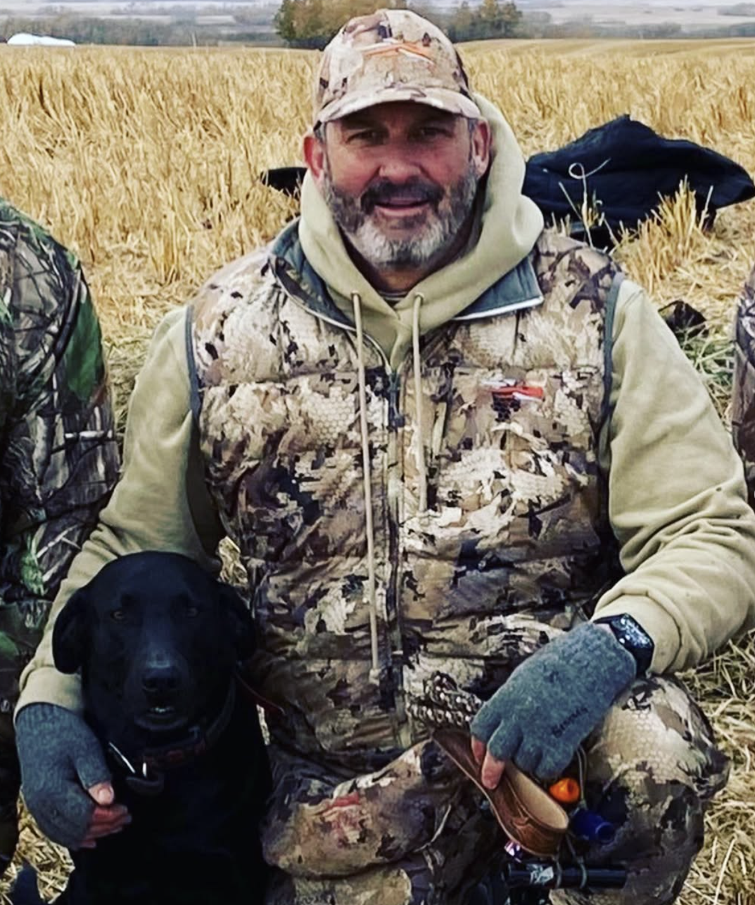

Episode 5 · May 23, 2023 · 4365
Interview with Mike Birch and his journey of hunting and handling bird dogs.

About This Episode
Questions about the training topics in this episode? Tyce works with bird dog owners and hunters through Utah Bird Dog Training. Reach out to work with him directly.
Resources & Links
- Utah Bird Dog Training — Work directly with Tyce — professional bird dog training services in Utah.
Transcript
Full transcript for Episode 5: Interview with Mike Birch and his journey of hunting and handling bird dogs..
Tyce
Hey everyone, welcome to the Bird Dog Podcast. I've got Mike Birch on the show today. Mike is one of the most knowledgeable and passionate hunters I know — he's been chasing birds and running dogs for decades. Today we're going to talk about his journey into hunting and bird dogs. Mike, welcome to the show.
Mike
Thanks Tyce. Yeah, it goes back a long way. I grew up hunting — my family hunted, upland birds mostly, some waterfowl. Dogs were always part of it. The bird dog connection is one of those things that just gets into your blood and it doesn't leave. I've had Labs most of my life and hunted them hard.
Tyce
What does that journey look like when you really start digging into training versus just owning dogs that hunt?
Mike
There's a big shift that happens when you go from having a dog that's a decent hunting dog to having a dog that's been properly trained. The first time I saw a well-handled dog work — a dog that took a cast, drove to a blind retrieve, and came back with the bird cleanly — I realized I hadn't seen what dogs were actually capable of. I'd been hunting with dogs that did the basics and I thought that was it. It's not. The ceiling on what you can do with a properly trained dog is a lot higher than most people realize until they see it up close.
Once I understood that, getting my dogs trained properly became something I took seriously. Not as a competitive thing — just because I wanted the hunting to be what it could be. I want to shoot a bird, know it went down in a tough spot, send the dog, and watch it work. That's the whole point. A dog that can handle and retrieve reliably is a different hunting experience than a dog that might go find the bird if you're lucky.
Tyce
What would you tell someone who's thinking about getting a bird dog for the first time?
Mike
Start with a plan. Know what kind of hunting you're going to be doing and get a breed that fits it. Don't just pick the dog that looks coolest or the first one available. Talk to trainers, talk to hunters who run the breed you're considering, and get honest feedback. Then invest in training early. A puppy that gets the right foundation is a completely different story at two years old than one that just gets love and some bumper throwing. The foundation matters more than most new dog owners realize. But when you put it together right — good genetics, good training, real hunting — there's nothing better. Thanks Tyce.
Tyce
Mike, thanks for coming on. Great perspective from someone who's been living this for a long time. More from Mike in future episodes.
About the Host
Tyce Erickson
Tyce Erickson is a professional bird dog trainer and the owner of Utah Bird Dog Training in Utah. For nearly two decades he has worked with pointing dogs, retrievers, and family hunting dogs — helping owners build dogs that are capable and enjoyable in the field. The Bird Dog Podcast is an extension of that work: honest conversations on training, hunting, breeding, and everything that goes into a life spent working dogs.
More About Tyce